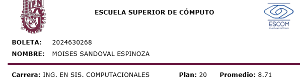
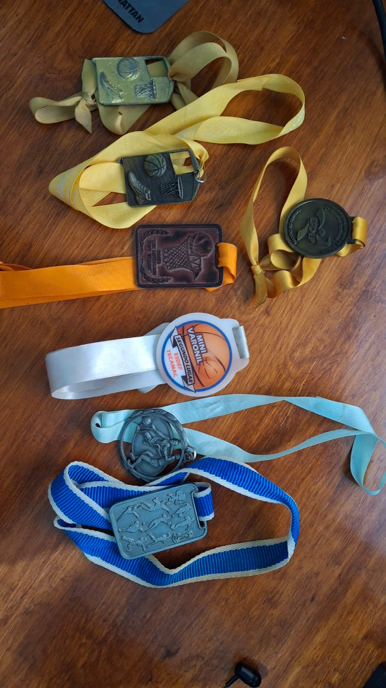
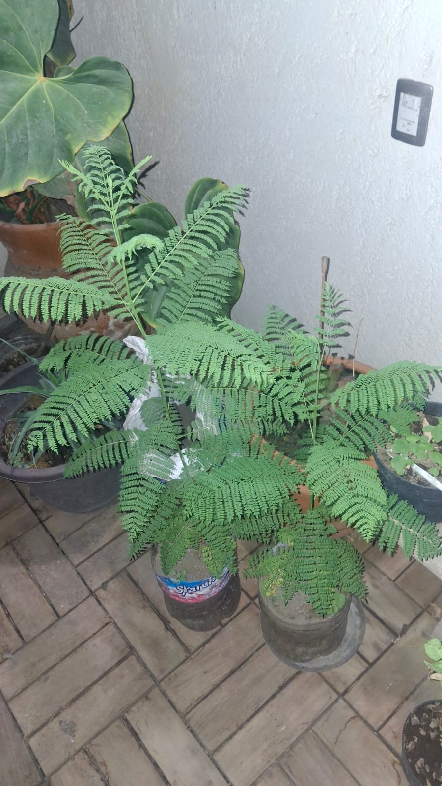
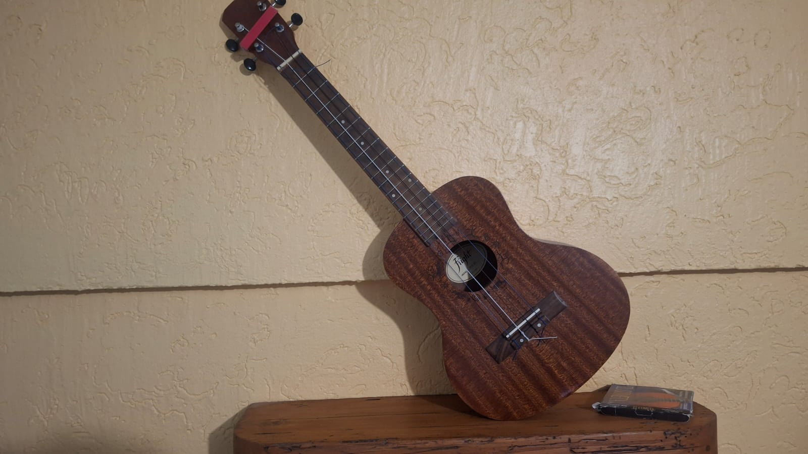
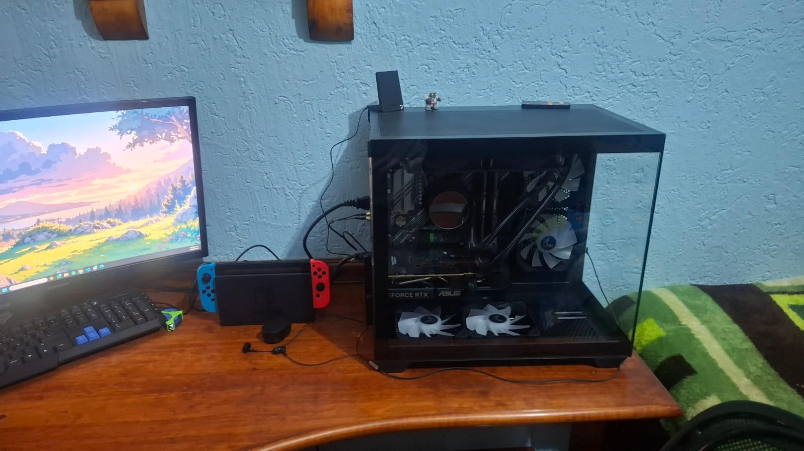
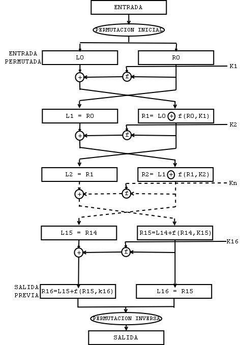

Sobre Mí
Mi nombre es Moises Sandoval Espinoza. Naci el 29 de Septiembre del 2005 en el Estado de México. Por lo tanto, a dia de hoy tengo 20 años, proximo a cumplir 21 años. Desde la secundaria, me interesó mucho el area de la tecnología, principalmente la programación. Por lo tanto, desde casi siempre supe a donde me quería dedicar. Esto me llevó a tomar la decisión de estudiar en el Instituto Politecnico Nacional.

Formación Académica
Mi formacion academica ha sido bastante normal, el kinder lo curse en uno de mi zona llamado David Alfaro Siqueiros . Posteriormente, curse la primaria en la escuela primaria Manuel Hinojosa Giles . Una primaria nada fuero de lo común. La secundaria la curse en la Escuela Secundaria Tecnica No. 147 Gral. Felipe Angeles Ramírez, en esta secundaria, fue donde tuve la oportunidad de empezar a conocer el mundo de la programacion, aunque era de manera muy basica, me enseñaron principalmente a realizar paginas web. Sin embargo, por medio de la pandemia termino interrumpiendose mi aprendizaje en este tema. Posteriormente, curse la preparatoria en el Centro de Estudios Científicos y Tecnológicos No. 3 "Estanislao Ramírez Ruíz", dentro de este nivel de estudios, fue donde tuve la mayor oportunidad de aprender sobre la programacion. Los proferos que encontre en esa escuela ( Principalmente uno de programacion ) , me dieron una gran cantidad de conocimientos en el lenguaje JAVA, por medio de esto, es que se me ha podido facilitar el aprendizaje de otros lenguajes de programacion y tener una buena logica de programacion. Finalmente, mi trayecto universitario ha sido bastante satisfactorio hasta el momento. He tenido la oportunidad de aprender sobre una gran cantidad de temas relacionados con la informática, tanto de hardware como de software. Además, también he aprendido más acerca de la ética profesional, la cual debo usar en mi vida profesional. En cuanto a mis calificaciones, he mantenido un promedio bastante normal, siendo este de 8.7. Durante estos 6 semestres que he cursado la carrera, me he sentido satisfecho con lo que se me ha enseñado y a día de hoy, puedo decir que me quiero dedicar principalmente al desarrollo de aplicaciones, además de la ciberseguridad.

Hobbies
A continuación, se presentará unos de los hobbies que tengo. Tratando de evitar que no tengan nada relacionado con la tecnología.
Ejercicio
Desde que tengo memoria he estado dentro de los deportes, mi mamá siempre me influenció demasiado en realizar actividades deportivas. Después de realizar natación y fútbol, me terminé decidiendo por el Basketball, deporte el cual practiqué por aproximadamente 6 años. Actualmente, realizo calistenia en mi casa, debido a no cumplir con los estándares para realizar basketball "profesional". Además, considerando el tiempo que me queda de la escuela no me es posible seguir practicándolo. Por lo tanto, tomé la decisión de hacer ejercicio desde mi casa.

Jardinería
Debido a que mi familia paterna son considerados ejidatarios, esto debido al reparto de tierras realizado en México. Siempre esa parte de mi familia se ha dedicado a la agricultura (maiz,frijol y posteriormente todo tipo de verduras). He podido estar cerca de todo el tema de las plantas desde pequeño. Principalmene, me gusta cuidarlas y cultivarlas para verlas crecer, en la actualidad, solo me dedico a cuidarlas y a plantar algunas de estas para verlas crecer, ya sean solo flores o plantas que den un fruto.

Música
Desde que tengo memoria, asi como la mayoria de las personas, la musica ha sido una de las actividades que más he disfrutado. En mi epoca de secundaria, tenia que tomar obligatoriamente clases de musica, donde era obligatorio aprender a tocar un instrumento musical, por lo tanto, decidi tocar la guitarra, esta decicion se tomo por los primeros 2 años y hasta el tercer año compre un ukelele, cambiando mi instrumento a este. Posteriormente, hice una pequeña banda con mis amigos, esto como proyecto para la materia, disfrute pasar el tiempo en esa banda pero terminando la secundaria, incluyendo la pandemia,el proyecto acabo en ese momento. Actualmente, solo escucho la musica y en mi tiempo libre toco un poco el ukelele o la guitarra.

Videojuegos
Casi desde toda mi vida he tenido acceso al internet y por ende a los videojuegos. Mi primera consola fue un Xbox 360 para después pasarte a un Nintendo 2DS. Después de un tiempo, dejé de jugar por un rato, hasta comprar mi Nintendo Switch por 2022, consola que a día de hoy sigo utilizando. Realmente me gustan todo tipo de juegos, por lo tanto, he buscado probar diversos juegos para disfrutar de cada uno de ellos.

Historia del algoritmo DES
Es un método de cifrado simétrico desarrollado en la decada de 1970 por IBM, posteriormente adoptado por el gobierno de los Estados Unidos de America como un estándar de cifrado. Este es considerado como el cifrado que coloco las bases para la criptografía moderna.
Linea de tiempo
- 1971: Investigadores de IBM destacando Horst Feistel, desarrollan un algoritmo criptográfico de nombre Lucifer.
- 1973: La Oficina Nacional de Normas de EE.UU, lanza una convocatoria para crear un estándar nacional de cifrado.
- 1975: Se lanza una segunda convocatoria y se adopta el diseño de IBM. Sin embargo la Agencia Seguridad Nacional, reduce el tamaño del algoritmo de 128 bits a 56 bits.
- 1977: El algoritmo DES es adoptado como estándar federal de EE.UU.
- 1998: Organizaciones como EFF Electronic Frontier Foundation, construyen computadoras especializadas en descifrar mensajes, comprobando que 56 bits era una clave demasiado corta.
- 1999: Se descifra el algoritmo en pruebas masivasDES Challenges y se cambia el estandar actual a AES(Advance Encryption Standard)

Llave pública
Dentro de este boton puedes encontrar la llave pública.
Mi llave Pública